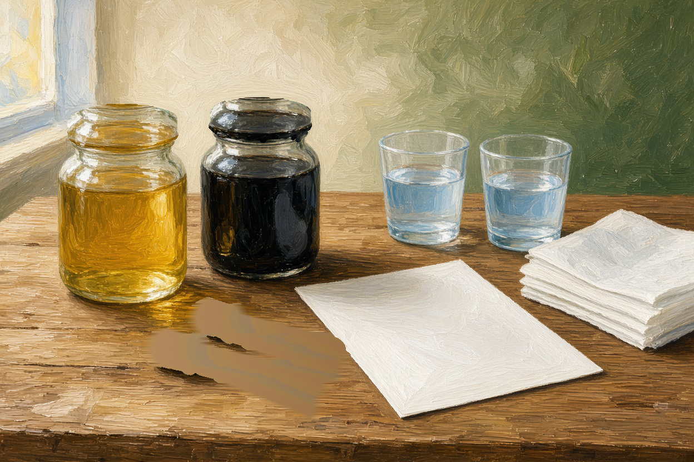
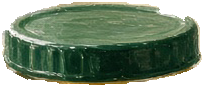
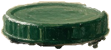

Get to know crude oil Get to know crude oil הכירו את הנפט הכירו את הנפט הגולמי
By the end of this page, say how crude oil is different from cooking oil. By the end of this page, describe how crude oil differs from cooking oil. בסוף העמוד תוכלו לומר במה נפט גולמי שונה משמן מאכל. בסוף העמוד תוכלו לתאר במה נבדל נפט גולמי משמן מאכל.
The golden jar is cooking oil. The dark jar is crude oil. Click a jar to open its lid. Drag a dropper onto an open jar to fill it. Drag the full dropper onto the paper or a glass. The golden jar holds cooking oil. The dark jar holds crude oil, the same material found in the ground. Click a jar to open the lid. Drag a dropper onto an open jar and it fills with that liquid. Drag the full dropper onto the paper or onto a glass of water. הצנצנת הזהובה היא שמן מאכל. הצנצנת הכהה היא נפט גולמי. הקישו על צנצנת כדי לפתוח את המכסה. גררו טפי אל צנצנת פתוחה כדי למלא אותו. גררו את הטפי המלא אל הנייר או אל כוס. בצנצנת הזהובה יש שמן מאכל. בצנצנת הכהה יש נפט גולמי, כפי שמוצאים אותו באדמה. הקישו על צנצנת כדי לפתוח את המכסה. גררו טפי אל צנצנת פתוחה, והוא יתמלא בנוזל שבתוכה. גררו את הטפי המלא אל הנייר או אל כוס מים.
Two different oils A word: two oils שני שמנים שונים שני שמנים שונים
Cooking oil is the golden liquid from the kitchen, שמן מאכל. Crude oil is the dark liquid from the ground, נפט גולמי. They are not the same oil. Cooking oil, שמן מאכל, is the golden liquid used in food. Crude oil, נפט גולמי, is the dark liquid found in the ground. The word oil is in both names, but they are different materials. שמן מאכל הוא הנוזל הזהוב מהמטבח. נפט גולמי הוא הנוזל הכהה מהאדמה. אלה לא אותו שמן. שמן מאכל הוא הנוזל הזהוב שמשתמשים בו באוכל. נפט גולמי הוא הנוזל הכהה שנמצא באדמה. המילה שמן מופיעה בשני השמות, אבל אלה חומרים שונים.



The tests The tests הבדיקות הבדיקות
-
1. Open the dark jar. What color is the crude oil? Is the liquid thick or thin? 1. Open the dark jar and look at the crude oil. What color is it? Is the liquid thick or runny? 1. פתחו את הצנצנת הכהה. מה הצבע של הנפט הגולמי? הנוזל סמיך או דליל? 1. פתחו את הצנצנת הכהה והתבוננו בנפט הגולמי. מה צבעו? האם הנוזל סמיך או דליל?
-
2. Tap the dark jar again. Does the crude oil have a smell? Does the smell remind you of something you know? 2. Tap the dark jar again and think about the smell. Does the crude oil have a smell? Does that smell remind you of something else you know? 2. הקישו שוב על הצנצנת הכהה. האם לנפט יש ריח? האם הריח מזכיר לכם משהו מוכר? 2. הקישו שוב על הצנצנת הכהה וחשבו על הריח. האם לנפט הגולמי יש ריח? האם הריח מזכיר לכם משהו אחר?
-
3. Open the dark jar, fill a dropper, and drag it onto the white paper. A dark stain appears. 3. Open the dark jar, fill a dropper with crude oil, and drag it onto the clean white paper. The drop leaves a dark stain. 3. פתחו את הצנצנת הכהה, מלאו טפי, וגררו אותו אל הנייר הלבן. מופיע כתם כהה. 3. פתחו את הצנצנת הכהה, מלאו טפי בנפט גולמי, וגררו אותו אל הנייר הלבן. הטיפה משאירה כתם כהה.
-
4. Open the golden jar, fill a dropper, and drag it onto the paper. Compare the two stains. 4. Open the golden jar, fill a dropper with cooking oil, and drag it onto the paper. Compare the gold stain with the dark one. 4. פתחו את הצנצנת הזהובה, מלאו טפי, וגררו אותו אל הנייר. השוו את שני הכתמים. 4. פתחו את הצנצנת הזהובה, מלאו טפי בשמן מאכל, וגררו אותו אל הנייר. השוו את הכתם הזהוב לכתם הכהה.
-
5. Drag a full dropper of crude oil onto a glass. What happens to the oil? 5. Drag a full dropper of crude oil onto either glass of water. What happens to the oil? 5. גררו טפי מלא בנפט גולמי אל כוס. מה קורה לנפט? 5. גררו טפי מלא בנפט גולמי אל אחת מכוסות המים. מה קורה לנפט?
-
6. Drag a full dropper of cooking oil onto a glass. What happens to the oil? 6. Drag a full dropper of cooking oil onto either glass of water. What happens to the oil? 6. גררו טפי מלא בשמן מאכל אל כוס. מה קורה לשמן? 6. גררו טפי מלא בשמן מאכל אל אחת מכוסות המים. מה קורה לשמן?
-
7. When crude oil burns, do you see smoke and soot? 7. When a few drops of crude oil burn, do you see smoke and soot? 7. כשנפט גולמי נשרף, רואים עשן ופיח? 7. כשכמה טיפות נפט גולמי נשרפות, רואים עשן ופיח?
Write the properties of crude oil that you found. Sum up the properties of crude oil that you observed. כתבו אילו תכונות מצאתם לנפט הגולמי. סכמו את תכונות הנפט הגולמי שראיתם.
-
Think. Why do people also call crude oil earth oil and black gold? Think. Why is crude oil also called earth oil and black gold? חישבו. מדוע קוראים לנפט הגולמי גם שמן אדמה וגם זהב שחור? חישבו. מדוע יש לנפט הגולמי גם שמות נוספים: שמן אדמה וזהב שחור?
The tests are done. You have finished the tests. הבדיקות הסתיימו. סיימתם את הבדיקות.